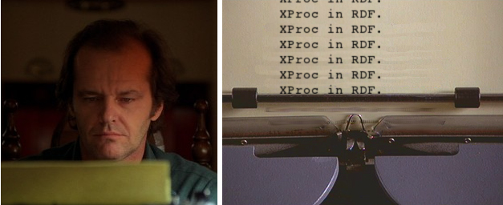

2012-03-20
This document is a work in progress.
Ultimately it will be a companion to the Proc Vocabulary Specification.
Right now it's a memo pad.

Web Beeps
Digital Signal Processing
Agent-oriented Web Services
OWL-S - this specification is very close in intent to Proc, and many of the classes/properties will be reused.
Proc is not XProx in RDF!
But there are significant similarities, and the design of Proc is informed by XProx.